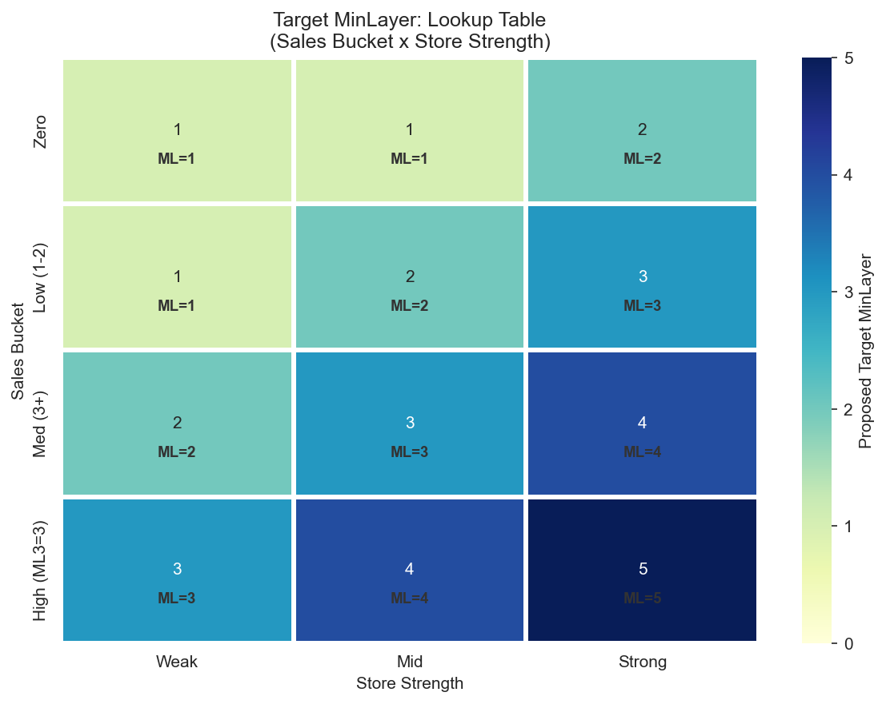

Decision Tree: Pravidla MinLayer 0-5
CalculationId=233 | Datum: 2025-07-13 | Generovano: 2026-03-22 03:46
Tento report definuje konkretni pravidla pro nastaveni MinLayer na zaklade analytiky z
Report 1: Consolidated Findings.
1. Source pravidla
Zdrojovy MinLayer urcuje, kolik kusu produktu musi zustat na zdrojove prodejne po redistribuci.
Vyssi MinLayer = mene kusu se odveze = nizsi oversell (ale take mene redistribucnich presunu).
1.1 Lookup tabulka: Pattern x Store
Primarni prediktor oversell je kombinace prodejniho vzoru (24M historie) a sily prodejny
(viz Findings, sekce 2 a 3).

| Pattern / Store | Weak | Mid | Strong | Zduvodneni |
|---|
| Dead (0 prodeju 24M) | 1 | 1 | 1 | Zadne prodeje = nizky oversell (5-10%), ML=1 staci |
| Dying (stare prodeje) | 1 | 1 | 1 | Podobne jako Dead, 8-13% oversell, ML=1 staci |
| Sporadic (nepravidelne) | 1 | 1 | 2 | Strong stores maji 20% oversell -> zvysit na ML=2 |
| Consistent (3-4 obdobi) | 1 | 2 | 3 | 22-28% oversell, Mid i Strong prekracuji cil |
| Declining (klesajici) | 2 | 3 | 3 | 25-35% oversell! Vsechny prekracuji cil, Weak taky |
Logika: Dead a Dying produkty se neprodavaji, takze redistribuce z nich je bezpecna (ML=1).
Consistent a Declining produkty se stale prodavaji, a pri redistribuci se zdrojova prodejna "vyprazdni" a musi doobjednat.
Silne prodejny maji vyssi riziko, protoze prodavaji vice.
1.2 Business rules (Overrides)
| Pravidlo | Podminka | MinLayer | Zduvodneni |
|---|
| Active orderable | SkuClass = A-O(9) | MIN = 1 | Aktivni zbozi nesmi mit ML=0 |
| Z orderable | SkuClass = Z-O(11) | MIN = 1 | Z zbozi stale objednavatelne |
| Delisted | SkuClass = D(3), L(4), R(5) | = 0 | Delistovane - bezpecne odvest vse (-29pp reorder) |
1.3 Modifikatory
| Modifikator | Podminka | Uprava | Zduvodneni (viz Findings) |
|---|
| Vanocni sezonnost | Xmas share 20-60% | +1 | Sekce 7: +9-11pp oversell pro sezonni produkty |
| Brand-Store fit | Strong brand + Strong store | +1 | Sekce 8: +16pp oversell gap |
| Siroka distribuce | Produkt na 100+ prodejnach | +1 | Sekce 8: +25.9pp reorder gap |
CAP: Vysledny MinLayer je omezen na maximum 5. Modifikatory se prictou k base hodnote z lookup tabulky.
2. Target pravidla (sales-based)
Cil: Poslat dostatek kusu, aby se produkt prodaval A 1 kus zustal na prodejne.
Pokud se vse proda (all-sold), je to uspech, ale priste posleme vice.
2.1 Lookup tabulka: SalesBucket x Store

| SalesBucket / Store | Weak | Mid | Strong | Zduvodneni |
|---|
| Zero (0 prodeju) | 1 | 1 | 2 | Zadne prodeje, ale Strong stores prodaji vse (66.5%) |
| Low (1-2 prodeje) | 1 | 2 | 3 | Nizke prodeje, Mid/Strong stores maji >56% all-sold |
| Med (3+ prodeju) | 2 | 3 | 4 | Castejsi prodeje, vyssi ML = vice zbozi zusane |
| High (ML3=3) | 3 | 4 | 5 | Vysoke prodeje, ML3 Strong: 81.4% all-sold |
2.2 Data podporujici target pravidla
Proc navysujeme target ML pro silne prodejny? Protoze silne prodejny prodaji vse a pak nemaji zasobu:
| Segment | All-sold % | Avg extra ks potreba | Vyznam |
|---|
| ML1 Strong | 65.6% | 1.79 ks/target | 65% targetu vse prodalo, kazdy potrebuje v prumeru 1.8 ks navic |
| ML2 Strong | 61.8% | 2.51 ks/target | Vyssi ML, ale stale 62% all-sold |
| ML3 Strong | 81.4% | 5.19 ks/target | 81% all-sold! Tyto targety potrebuji vyrazne vice |
"Extra needed" = kolik vice kusu bychom meli poslat, aby po vsech prodejich zustal alespon 1 kus.
Napr. ML3 Strong: prumerny target potrebuje 5.19 kusu navic. Pokud zvysime target MinLayer, posime vice kusu,
a je pravdepodobnejsi, ze po prodejich alespon 1 kus zustane.
3. Pseudokod

3.1 Source MinLayer
FUNCTION CalculateSourceMinLayer(sku, store):
-- 1. Delisting override
IF sku.SkuClass IN (3, 4, 5): -- D, L, R
RETURN 0
-- 2. Classify sales pattern (24M)
pattern = ClassifySalesPattern24M(sku, store)
-- Dead: 0 sales in 24M
-- Dying: sales only in periods A/B, nothing recent
-- Sporadic: irregular sales, not in every period
-- Consistent: sales in 3-4 of 4 periods
-- Declining: B > C > D (each period lower)
-- 3. Classify store strength
strength = ClassifyStoreStrength(store.Decile)
-- Weak: decile 1-3, Mid: 4-7, Strong: 8-10
-- 4. Lookup base MinLayer
base = SOURCE_LOOKUP[pattern][strength]
-- 5. Business rules
IF sku.SkuClass IN (9, 11): -- A-O, Z-O
base = MAX(base, 1)
-- 6. Modifiers
IF sku.XmasShare BETWEEN 0.20 AND 0.60:
base = base + 1
IF BrandStoreFit(sku, store) == 'Strong+Strong':
base = base + 1
IF sku.StoreCount > 100:
base = base + 1
RETURN MIN(base, 5)
3.2 Target MinLayer
FUNCTION CalculateTargetMinLayer(sku, store):
-- 1. Classify sales bucket
bucket = ClassifySalesBucket(sku, store)
-- Zero: 0 sales
-- Low: 1-2 sales
-- Med: 3+ sales
-- High: current ML3 = 3
-- 2. Classify store strength
strength = ClassifyStoreStrength(store.Decile)
-- 3. Lookup base MinLayer
base = TARGET_LOOKUP[bucket][strength]
RETURN MIN(base, 5)
Generovano: 2026-03-22 03:46 | CalculationId=233 | EntityListId=3 |
Viz Report 3: Backtest pro dopad navrhovanych pravidel.